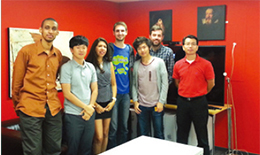
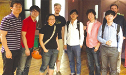
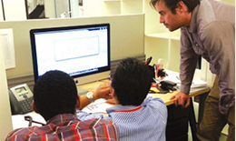

@@include('../inc/tab.html',{
"has_tab" : true,
"tab_list" : ["개요","교과목 일람표","학위","Q.E","학생지원","대학원 프로그램","졸업"],
"type" : "type7"
})
대학원 프로그램
-
Lab Rotation
- Lab Rotation을 통해 지도교수와 연구분야를 학생이 지도적으로 선택
- 참여기간은 Lab당 3개월로 하며, 3개의 Lab에서 연구참여를 한 뒤 지도교수를 선정
-
미래IT융합 인재 양성을 위한 차별화된 교과과정
- 다양한 분야의 폭넓은 전공학점 인정
- 창의력과 융합적 사고력 배양을 위한 특화 교과목 운영
- 다양한 기술경영 교과목 운영
-
통합 논문지도 체제
- 필요한 경우 다양한 분야의 Co-Advisor를 둠으로써, IT융합 연구를 위한 통합 논문지도 체제를 제공
-
해외 인턴제도 지원
-
Full-time으로 해외 유수기업, 벤처기업 및 대학연구기관에서 실무경험 습득
(Product 및 Service 개발, 인력 및 자원활용 등)
-
Full-time으로 해외 유수기업, 벤처기업 및 대학연구기관에서 실무경험 습득
-
 -
 -
 -